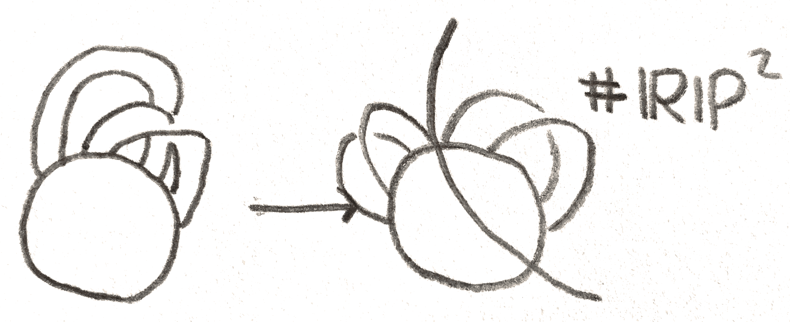

Consider the following function on the torus \(T^2\). We imagine it standardly embedded in \(\RR ^3\), and somewhat tilted, as shown in Figure 1.
Now consider the height function \(h\) on it. We can consider the sub-level sets \(h_a = \{x \in T^2|x \leq a\}\). As we pass through \(a = 0\), \(h_a\) changes from being empty to being a disk. After we pass \(a = 1\), we get something that looks like an annulus. After passing through \(a = 2\), \(h_a\) looks like a punctured torus, and after passing through \(a=3\), \(h_a\) is the entire torus. If we just think about the diffeomorphism type of the \(h_a\), we can interpret this example as follows: at \(a = 0\), we added a disk, at \(a=1,2\) we added a band onto the boundary of the disk, and at \(a=3\) we capped off the boundary of the disk.
So by looking at this function on our torus, we have gotten a description of the torus in terms of disks in bands. Morse theory gives a similar description for any smooth manifold for any sufficiently nice function \(h\). From now on our manifolds will be smooth, finite dimensional, and compact. When we do Morse theory, they will also be closed.
Suppose that we have a \(n\)-manifold with boundary \((M,\partial M)\). To attach a \(k\)-handle on \(M\) is to add a copy of \(D^k\times D^{n-k}\) that is attached along the \(\partial D^k \times D^{n-k}\) part of the boundary to the rest of the manifold via some diffeomorphism \(\phi \). The handle comes with a core, which is \(D^k\times 0\), and a cocore, \(0 \times D^{n-k}\). Up to homotopy type, adding a \(k\)-handle is the same as adding in a \(k\)-cell. The attaching map is an embedding of the trivial \(n-k\) disk bundle of \(S^{k-1}\) on \(\partial M\). This is a framed \(k-1\) knot in \(\partial M\). An \(r\) knot in a \(m\)-manifold \(N\) is an embedded of \(S^r\). For it to be framed simply means we have fixed some trivialization of its normal bundle in \(N\). We only are about the framing up to homotopy, and so the group \(\pi _r(O(m-r))\) acts simply and transitively on the homotopy classes of framings.
For example, when \(n = 2\), adding a \(0\)-handle is to add in a disjoint disk, to add a \(1\)-handle is to add a band, and to add a \(2\)-handle is to attach a disk along a circle on the boundary. Above we saw that the height function on the torus gave a handle decomposition of the torus, or a description of the torus given by adding handles one by one to an empty manifold. There is only one way to frame a \(0\) or \(2\)-handle on a surface, and two ways for a \(1\)-handle, since \(|\pi _0(O(1))| = 2\).
We can make a handle decomposition for \(\RR \PP ^2\). We can cover it by three disks that are attached along their boundary as follows: \(U_i\) will be the disk of points \([x_0:x_1:x_2]\) in \(\RR \PP ^2\) such that \(x_i = 1\), \(|x_j| \leq 1, j \neq i\). We can first add in \(U_0\), and then add in \(U_1\). To find the attaching map, the two strips on the boundary of \(U_1\), \([\pm 1:1:x_2], -1 \leq x_2 \leq 1\) are attached to the two strips on \(U_0\), \([1:\pm 1:x_2], -1 \leq x_2 \leq 1\). Note that the framing on this attaching map has different orientation on different parts of the boundary, and we get a Möbius band. The last \(U_2\) caps off the boundary of the Möbius band with a disk.
One can change a handle decomposition by certain moves to not actually change the diffeomorphism type of the manifold. There are three moves that can get between any two handle decompositions of a manifold.
The first move is to change the order in which any two handle decompositions are added by adding two handles that are disjoint, we can switch the order in which we attach them. We can also isotope the attaching maps of any of the handles without changing the manifold. Finally, we can add or remove handles that cancel each other. What this means is the following: Suppose we have a \(k\)-handle attached along an unknotted (isotopic to a standard embedding) \(S^{k-1}\) whose framing extends to a framing of an embedded disk \(D^k\) on the boundary that it bounds. Then a neighborhood of the handle and this disk is diffeomorphic to \(S^k \times D^{n-k}\) as we are gluing together \(D^{n-k}\) bundles together in a trivial way along their boundaries (for a \(0\)-handle, choose any ball along the boundary to add in as the neighborhood). Now we can view \(S^k \times D^{n-k}\) as \(S^k \times D^1 \times D^{n-k-1}\), and glue in a \(k+1\)-handle such that the cocore is glued along the \(D^{n-k-1}\) direction, and the core is glued via the identity map to \(S^k\). Then we get \((D^{k+1} \coprod (S^k\times D^1)\times D^{n-k-1} = D^{k+1}\times D^{n-k-1} = D^n\), so adding in the \(k\)-handle and \(k+1\)-handle is equivalent to connect summing with a ball. Thus another move we can do is to add or remove such pairs of cancelling \(k\) and \(k+1\)-handles.
Suppose that we have a manifold \(M\) to which we first attach an \(r\)-handle and then a \(m\)-handle, where \(m \leq r\). If we can push the boundary of the core of the \(m\)-handle off of the boundary of the cocore of the \(r\)-handle, by changing what we call the \(r\)-handle to something smaller, we can make the handles disjoint. Indeed we can always do this, since the cocore of the \(r\)-handle is dimension \(n-r-1\) and the dimension of the boundary of the core of the \(m\)-handle is \(m-1\) and so the sum of the dimensions is strictly less than \(n-1\). Thus if there are finitely many handles, we can isotope them to attach them in order of increasing index. We can say more. First suppose we have a \(2\)-manifold built only out if \(0\) and \(1\)-handles, we can represent it via a drawing where The \(0\)-handles are circles that represent their boundary, and the \(1\)-handles are bands attached between the \(0\)-cells. An example is below:
There are \(2\) moves on this graph that we can do to go between any two representations of the same manifold. If there are is a \(1\)-handle with only \(1\) band, we can add or remove such a pair of handles (this corresponds to cancelling the handles). If two bands are next to each other on the cyclic ordering, we can slide one across the other (this is an isotopy), as shown below:
Note that we can always do these moves to reduce the number of \(0\)-handles to the number of connected components.
If \(n>2\), we still represent such a manifold with a graph instead of a drawing, where the edges (\(1\)-handles) are labelled \(\pm 1\), to say whether the \(1\)-handles are attached in an orientation preserving or reversing way onto the \(0\)-handles. Now our moves are as follows: If there is a leaf on the graph, we can remove that edge and vertex. If there are two edges who meet at a common vertex, we can slide one of the edges so that instead it meets at another vertex, and have this new edge have the orientation that is the product of the orientation of the two edges. Finally, one can switch the orientation of of a vertex, which will change the sign of each edge once for every time it is incident to that vertex.
Exercise 2.0.1. Show that any graph representing a connected manifold of dimension \(\geq 3\) can be changed via these moves to have \(1\) vertex and at most \(1\) negative edge.
Every manifold admits a handle decomposition. To do this, we will consider smooth functions \(f\) on our manifold \(M\), and try to analyze them as we did in the example of the torus. We say that a critical point of \(f\) is a point at which \(df=0\). At any critical point, there is a symmetric bilinear form on the tangent space, called the Hessian. It is defined as follows: given two tangent vectors \(v_1,v_2\) at the critical point \(p\), We can extend them to vector fields \(\tilde{v_1},\tilde{v_2}\) locally, and define \(H(v_1,v_2)= \tilde{v}_{1,p}(\tilde{v}_2(f))\).To see this is symmetric, \(H(v_1,v_2)-H(v_2,v_1) = [\tilde{v}_1,\tilde{v}_2]_p(f)\), and from definition this doesn’t depend on \(\tilde{v}_1\), so it doesn’t depend on \(\tilde{v}_2\) either. To write the bilinear form down, we can pick local coordinates \(x_1,\dots ,x_n\), and choose \(v_i = \partial x_i\), so that \(H\) is given by the matrix of \(2^{nd}\) partial derivatives of \(f\).
As a symmetric bilinear real form, the Hessian is determined by its rank, nullity, and index. If the Hessian is a map \(TM_p\otimes TM_p\to \RR \), its adjoint is a map \(TM_p\to T^*M_p\), and the dimension of the kernel of this is the nullity. We say that a symmetric bilinear form \(B\) is negative definite if \(B(v,v) < 0\) for \(v \neq 0\). The index is the dimension of the largest subspace on which \(B\) is negative definite. After an appropriate choice of basis \(x_1,\dots ,x_n\) if \(B\) has rank \(n\), index \(v\), and nullity \(r\), \(B\) will look like \(x_1^2+\dots x_{n-v-r}^2-x_{n-v-r+1}^2-\dots x_{n-r}^2\). We say that a critical point is nondegenerate if the Hessian at that point is nondegenerate, meaning that its nullity is \(0\). Then since the rank is just the dimension of the manifold, the index is the only invariant of the Hessian.
An example of a degenerate critical point is the function \(x^3\) on \(\RR \) at the origin, or the function \(x^2y^2\) on \(\RR ^2\), which is degenerate along the \(xy\) axes.
Here is an example of a nondegenerate critical point. Consider the function \(x_1^2+x_2^2+\dots +x_v^2-x_{v+1}^2-\dots -x_n^2\) as a function on \(\RR ^n\). Then the origin is a critical point, and its Hessian is given by \(\partial x_1^2+\partial x_2^2+\dots +\partial x_v^2-\partial x_{v+1}^2-\dots -\partial x_n^2\), so is nondegenerate. In fact this is the local behavior of any example. The following lemma can be proved via elementary means:
Lemma 3.1 (Morse Lemma). Suppose \(f\) is a smooth function on \(M\) and \(p\) is a nondegenerate critical point of \(f\). Then there is a local chart near \(p\) sending \(p\) to \(0\) in an open subset of \(\RR ^n\) such that on this chart \(f\) is given by \(x_1^2+x_2^2+\dots +x_v^2-x_{v+1}^2-\dots -x_n^2\).
A Morse function on a compact manifold \(M\) is a function such that all critical points are nondegenerate. Our function on the torus was a Morse function, and shown below are two Morse functions on \(S^2\), interpreted as height functions again:
Exercise 3.2.1. Find a Morse function on \(S^n\). Given a triangulation of a manifold, can you imagine a Morse function such that the center of the \(k\)-simplicies are the index \(k\) critical points? What about for a handle decomposition (of which a simplicial complex is a special case)?
We can use Morse functions to get handle decompositions of our manifold. To do this given a Morse function \(f\), as in our first example, we consider \(f_a\) to be the sub-level set of \(f\) at \(a\).
Theorem 3.3. If \(f\) is a function on \(M\), and \(a,b \in \RR \) such that there are no critical points in \([a,b]\), then the manifold \(f_a\) is diffeomorphic to the manifold \(f_b\), and the inclusion map \(f_a \hookrightarrow f_b\) is a homotopy equivalence.
Proof. Only the idea of the proof will be given here. First, we give a metric to the manifold, so that we can take the gradient of the function \(f\). We can multiply the gradient vector field by a function that is \(\frac{1}{\langle \grad (f),\grad (f)\rangle }\) on \(f_b-f_a\) but that vanishes outside of \(f_{b+\ee }-f_{a-\ee }\), where \(\ee \) is small enough to not contain any critical points. Then by flowing the manifold \(f_b\) down, the level set \(f^{-1}(b)\) will flow through level sets since we have normalized \(\grad f\) to have speed \(1\). Then it will eventually reach the level set \(f^{-1}(a)\), giving the desired diffeomorphism. This flow is also a deformation retraction of \(f_b\) onto \(f_a\).

Thus in order to see how \(M\) is built up through its sub-level sets,we only need to examine what happens at critical points. By a similar argument to above, this is a local argument, and we only need to look at our local model from the Morse lemma. From the diagram below, we can see that as we pass through an index \(k\) critical point, the only thing that changes is that we have added a \(k\)-handle. Shown below is the handle in our local model.
Thus if we have a Morse function, we get a handle decomposition of our manifold by building it up out of level sets. Fortunately not only do Morse functions exist, but they are also generic, and any function can be approximated on its \(\leq k^{th}\) partial derivatives by Morse functions. Here is an example of a theorem giving their genericity:
Theorem 3.4. Suppose \(M \subset \RR ^n\) is a compact submanifold. Then the set of points on which the function \(f(x) = \Vert x-p\Vert ^2\) is Morse on \(M\) has full measure.
In particular, we get the following:
Much of the earlier discussion about how we can move between two handle decompositions can be described in terms of Morse theory. Namely, we can view them as ways of changing the Morse function on our manifold \(M\). For example, the fact that handles can be isotoped to be added in terms of increasing index is equivalent to the existence of a self-indexing Morse function, or one where all the critical point of index \(i\) happen on \(f^{-1}(i)\).
Now that we know that any manifold has a handle decomposition, lets classify connected compact manifolds of dimension \(\leq 2\) with boundary. A \(1\)-manifold will looks like a connected graph where every vertex has degree \(\leq 2\). There are only two of these, namely \(S^1\) and \([0,1]\). To classify \(2\)-manifolds, it suffices to classify closed ones, i.e without boundary, since the boundary will be a bunch of circles, and we can cap off circles with a \(2\)-handle in a unique way. Then we can recover our manifold with boundary by removing a certain number of open disks. To draw them, we need only to draw the \(0\) and \(1\)-handles, since the \(2\)-handles can then be added in a unique way. As was noted earlier, we can assume there is only \(1\) \(0\)-handle. The \(1\)-handles are all bands attached to this, where every band may or may not have a half twists. If a band has a half twist, the rest of the bands can be slid over it to isolate the band from the rest as shown below:

We have showed then that this has decomposed our manifold as a connected sum with an \(\RR \PP ^2\) as a component. Now lets assume that all the bands are orientation preserving. If any band is isolated from the rest of the diagram, it can be cancelled, as it is a cancelling \(1\)-handle and \(2\)-handle. If there is a \(1\)-handle that doesn’t contain any handles inside of the the place it is attached, but isn’t isolated, its attaching \(S^0\) must be linked to the attaching \(S^0\) of some other band. Then as shown below, we can isotope the rest of the bands away from these two:
We will be left with an isolated part of the diagram that corresponds to taking a connected sum with a torus.
Thus we can keep simplifying our manifold into a connected sum of \(T^2\) and \(\RR \PP ^2\)s. Finally, the last step of the calculation is to prove the following relation among \(\RR \PP ^2, T^2\) which can be done via handle slides:
We have then proved:
Theorem 4.1. Every compact surface is obtained as a connected sum of \(\RR \PP ^2\)s or a connected sum of \(T^2\)s, with some open disks removed.
Morse theory is however sometimes more powerful than just the handle decompositions it gives. Part of the reason for this is that a Morse function comes with a gradient flow, namely the flow from the vector field that is the gradient of the function \(f\). This is the flow that we use to show that the diffeomorphism type doesn’t change away from critical points.
One application of the gradient flow is a key ingredient to a proof of the Poincaré-Hopf theorem. Say we have a compact manifold with a vector field \(V\) on it with isolated zeros. Then at each zero, we can remove a ball to get a manifold which has a boundary that is a lot of copies of \(S^{n-1}\). Each of these \(S^{n-1}\)s has a framing (i.e a unit outward pointing normal vector at each point.If the neighborhoods are small enough, the vector field will not vanish on the boundary. If we locally trivialize the tangent bundle near each zero of \(V\) before we remove the balls, we can send each boundary component to \(S^{n-1}\) by sending each point \(p\) to the unit vector in \(\RR ^n\) that \(V_p\) corresponds to in the trivialization. Then the degree of this map at each boundary component is called the index of the zero of the vector field.
It doesn’t in particular depend on the trivialization, which follows from the fact that the space of trivializations has two contractible components corresponding to different orientations, and also from the fact that switching orientation flips both the orientation of the domain and codomain of the maps from \(S^{n-1}\) to \(S^{n-1}\).
Now it is not too hard to show that this doesn’t depend on the choice of vector field. Namely let \(X\) be a compact \(m\)-manifold with boundary in \(\RR ^m\). The Gauss map is the map from \(\partial X\) to \(S^{m-1}\) sending a point to its unit normal vector. If we have a vector field with isolated zeroes on \(X\), then we first observe that the degree of the Gauss map is the sum of the indices of the zeroes of the vector field, since we can remove balls around the zeroes to get a cobordism from \(\partial X\) to the spheres around each \(0\). The Gauss map on this cobordism shows that the sum of the indices is the same. Finally, for a manifold \(M\), we can embed \(M\) in some \(\RR ^n\), and extend a vector field on it to a tubular neighborhood in such a way that as it gets closer to the boundary, it gets closer to the outward normal. Then the Gauss map agrees with the sum of the indices of the original vector field, but isn’t dependent on the vector field.
Finally, since each critical point amounts to adding a \(\nu \)-handle, the Euler characteristic is the sum over all the critical points of \(-1^\nu \) where \(\nu \) is the index. However, this is also the sum of the indices of the zeroes of the gradient flow vector field. To verify this, by the Morse lemma, it only suffices to do the following computation:
Exercise 4.1.1. The index of the gradient flow for the function \(-x_1^2-x_2^2-\dots -x_v^2+x_{v+1}^2+\dots +x_n^2\) at \(0\) is given by \((-1)^\nu \)
.
Hint: the map \(S^{n-1}\to S^{n-1}\) is a composite of reflections.